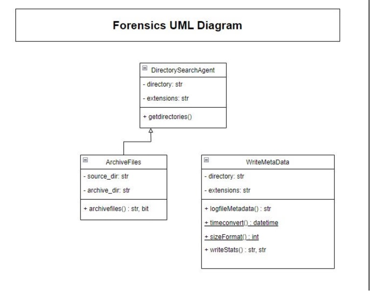
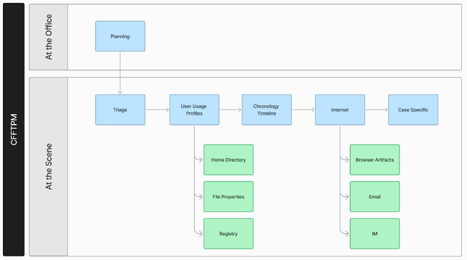
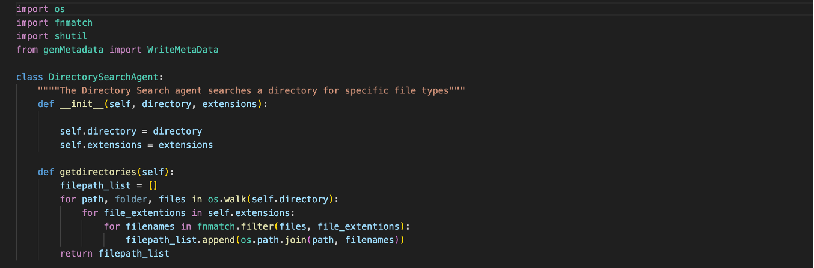
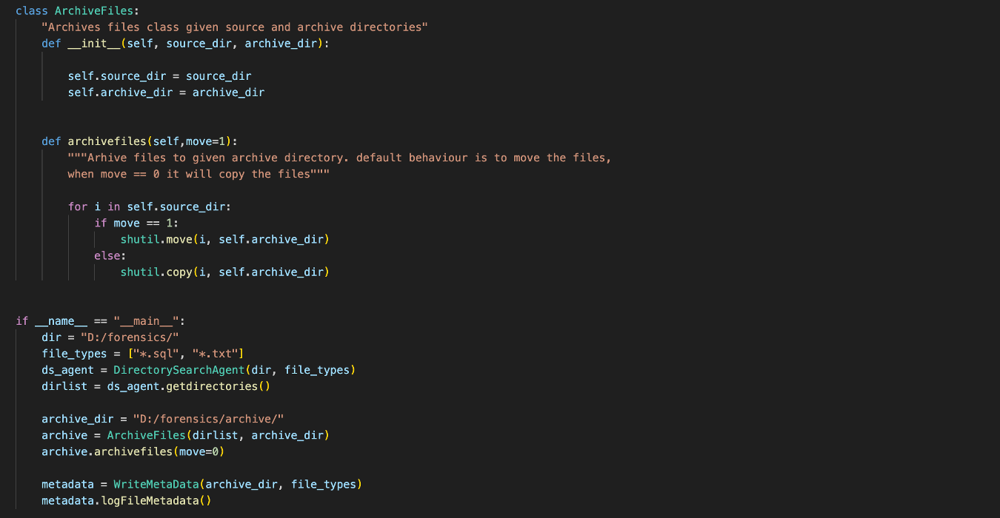
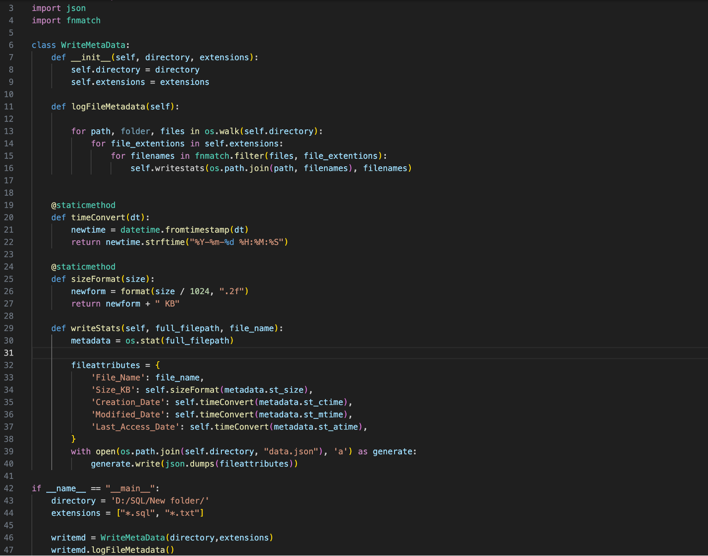
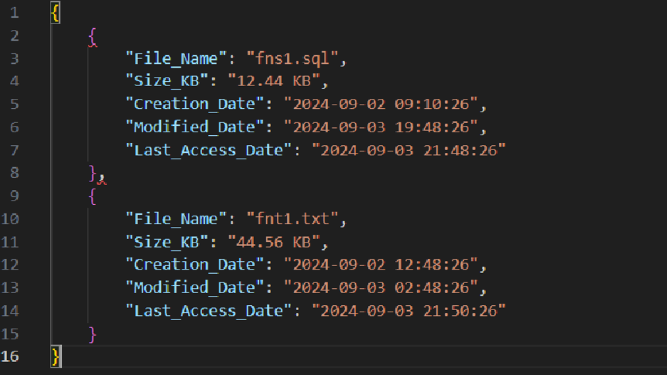

Group Project
A digital forensics agent.
Word count: 1077
1. Introduction
The ever-growing digital technology has greatly influenced how people live their lives. This fact has been a propellant for both innovation and challenges in the field of Digital Forensics. (Karie & Venter, 2015) As the population grows its digital footprint by manyfold, the probability of criminal activity leaving digital evidence has increased accordingly, with the EU estimating that 85% of all criminal investigations involve electronic evidence. (Casino et al., 2022) The present work proposes a set of digital agents that allow for streamlining the analysis of devices in the search for forensic evidence.
2. Business and Technical Requirements
The agent-based solution aims to perform a range of tasks autonomously, including operations such as file type recognition, file scanning, archival, and report generation. Figure 1 depicts the sequence diagram for the proposed agents.
2.1 Job Definition
When starting a new digital forensic job, the user will input/select the file type, the dictionary path to scan, and the target archive dictionary.
2.2 File Scan
When the system gets the scan parameter, it will traverse this dictionary and all its sub-dictionaries to find all files that match the file types in the condition. Then, these files will be copied to the target dictionary which is defined in step 1.
2.3 Report Generation
The system will query and export the files’ metadata into a report file based on Step 2’s result. The report should be converted into an easy-to-read form (JSON). After generation is completed, the user will be able to see a report file generated based on the given conditions.

Figure 1: Sequence diagram for the proposed Digital Forensics Agent system.
2.4 Data Requirements
The generated data files should be readable for human users and easily accessible by downstream systems or shared with any other parties. UTF-8 coding should be supported to display directories and files in most languages.
3. Technology and Tools
3.1 Technology Selection and Other Considerations
The Python programming language has been used. An object-oriented approach has been chosen to build the agent as this helps to better encapsulate the functionality and makes the code easier to maintain. In addition, modular design principles will be used to ensure low coupling between components for future extensions and upgrades.
3.2 Python Libraries Used
The os library comes standard with Python installation and has been used. It contains methods for interacting with the operating system, such as creating and managing files and directories (W3Schools, N.D.) The nmatch has also been used for matching Unix shell-style wildcards. It compares a single file name against a pattern and returns TRUE when matched and FALSE if not matched (GeeksforGeeks, 2020). The shutil library Includes several high-level operations on files and collections of files (python.org, N.D.) The datetime module supplies classes to work with data and time and includes several functions that deal with dates, times, and time intervals (GeeksforGeeks, 2023). Finally, the json module allows us to work with JSON data (pythoncheatsheet.org, N.D.).
4. Class/Agent Design
Each class is seen as an agent because none is dependent on the other, each class can be used independently. The reason for generating a json file, instead of inserting the data into a database, is so the file can be sent to anyone, and they can then decide what to do with the file, instead of having to access a database table. A class diagram is shown in Figure 2, and the entire Python code can be found in the Annex.
Figure 2: UML Diagram for the Digital Forensics system.
4.1 DirectorySearchAgent (directorySearchAgent.py)
This class searches the specified directory or path to search for specified file types on a file system. The getDirectories method generates a list of fully qualified file paths where the files are located.
4.2 ArchiveFiles (directorySearchAgent.py)
This class archives the files to a specified archive location. It accepts parameters: file_path_list generated from the DirectorySearchAgent and archive_dir: the directory to where it should move or copy the files.
4.3 WriteMetaData (genMetadata.py)
The final class generates a JSON file containing the following metadata about each file for analysis: File_Name, Size_KB, Creation_Date, Modified_Date,Last_Accessed_Date.
5. Limitations and Future Improvements
5.1 Modular design
By decomposing tasks into multiple independent but integrated Agents, the maintainability and scalability of the system are enhanced. However, this also brings the problem of concurrent processing. In the current design, WriteMetaData starts generating reports only after DirectorySearchAgent performs file scanning and ArchiveFiles copies the files to the target directory. This approach may result in a long waiting time when dealing with a large number of files. In future versions, if there are enough resources, concurrent processing mechanisms shall be considered, such as starting to generate part of the report at the same time as the scan.
5.2 Flexibility
Users can define job parameters at the start, which gives the system some flexibility to be configured for different needs. However, data consistency needs to be ensured before reports are generated immediately after document scanning is complete. This can only be achieved by adding a locking mechanism or checking file timestamps. For example, if new files are added or existing files are deleted during the document scanning process, consideration should be given to how to update the report or ignore the changes.
5.3 User experience
It is good practice for reports to be in JSON format for developers and downstream systems. However, for non-technical users, a more intuitive interface may be needed to view report content. A GUI or other user-friendly way of presenting reports could be considered for future releases.
6. Related Work
A widely used process for computer forensics in the real world is the computer forensics field triage process model (CFFTPM). The aim of this model is to 1) Immediate identification of usable evidence, 2) Identification of high-risk victims, 3) Guidance for the ongoing investigative process, 4) Potential legal charges identification, and 5) Accurately assess the accused’s danger to society (Rogers et al., 2006). A diagram with the CFFTPM steps is shown in Figure 3.
Figure 3: The CFFTPM Model, adapted from Rogers et al., 2006.
The implementation of performant digital forensics agents, such as the one described in this report is key so that the steps User Usage Profiles and Internet can be performed quickly.
7. Conclusion
In the present work, a suggested implementation of a digital forensics agent has been described, as well as future possible enhancements. Real-world forensics processes, such as CFFTPM may greatly benefit from agentic architectures for streamlining criminal cases.
References
Casino, F., et al. (2022) Research Trends, Challenges, and Emerging Topics in Digital Forensics: A Review of Reviews. IEEE Access 10: 25464-25493. DOI: 10.1109/ACCESS.2022.3154059
GeeksforGeeks (2020) FNMATCH - unix filename pattern matching in Python, GeeksforGeeks. Available from: https://www.geeksforgeeks.org/fnmatch-unix-filename-pattern-matching-python/ [Accessed: 24 August 2024].
GeeksforGeeks (2023) Python datetime module, GeeksforGeeks. Available from: https://www.geeksforgeeks.org/python-datetime-module/ [Accessed: 24 August 2024].
Karie, N. M. & Venter, H. S. (2015) Taxonomy of Challenges for Digital Forensics. Journal of Forensic Sciences 60 (4): 885–893. DOI:10.1111/1556-4029.12809.
Python JSON module - python cheatsheet (N.D.) python. Available at: https://www.pythoncheatsheet.org/modules/json-module [Accessed: 24 August 2024].
Rogers, M. K., Goldman, J., Mislan, R., Wedge, T., & Debrota, S. (2006) Computer Forensics Field Triage Process Model. Journal of Digital Forensics, Security and Law: 1: 2. DOI: https://doi.org/10.15394/jdfsl.2006.1004
Shutil - high-level file operations (N.D.) Python documentation. Available from: https://docs.python.org/3/library/shutil.html [Accessed: 26 August 2024].
W3schools.com (N.D.) W3Schools Online Web Tutorials. Available from: https://www.w3schools.com/python/module_os.asp?ref=escape.tech [Accessed: 24 August 2024].
8. Annex
8.1 Assumptions and limitations
The author assumes that the user running this system has sufficient privileges to access/modify the directories to be scanned and has the privilege to add new files and directories.
8.2 Development Method
The author chooses agile development, using Scrum or Kanban methods to achieve continuous improvement through short-cycle sprints. Sprints are conducted weekly or biweekly, with review meetings after each sprint to assess progress and plan goals for the next sprint.
8.3 User Experience
When it comes to the input experience, users should be able to use this intelligent agent system easily, so a user-friendly interface is needed to enter scanning conditions and display task execution status. However, in earlier versions of the project, input properties could be configured directly in the scripts. On the output end, the report file should be generated in the user-defined dictionary.
8.4 Coding Language
When developing this system, there are many benefits to choosing Python as the development language. Python has powerful standard libraries and third-party libraries that can be directly used for tasks such as file manipulation, regular expression matching, and more. At the same time, python is a cross-platform language that can run on multiple operating systems such as Windows, Linux, and MacOS, which is especially useful for this project, as the agent may need to run on different platforms.
8.5 System OS
Ubuntu 24.04, Debian 10 and other late mainstream Linux distributions, Windows 11, macOS 14 or higher.
8.6 Python Code
Following, the Python code used for each agent is shown.
Figure 4: Python code for the Directory Search Agent
Figure 5: Python code for the File Archival Agent
Figure 6: Python code for the Metadata Reporting Agent
Figure 7: Json file generated by WriteMetaData class.